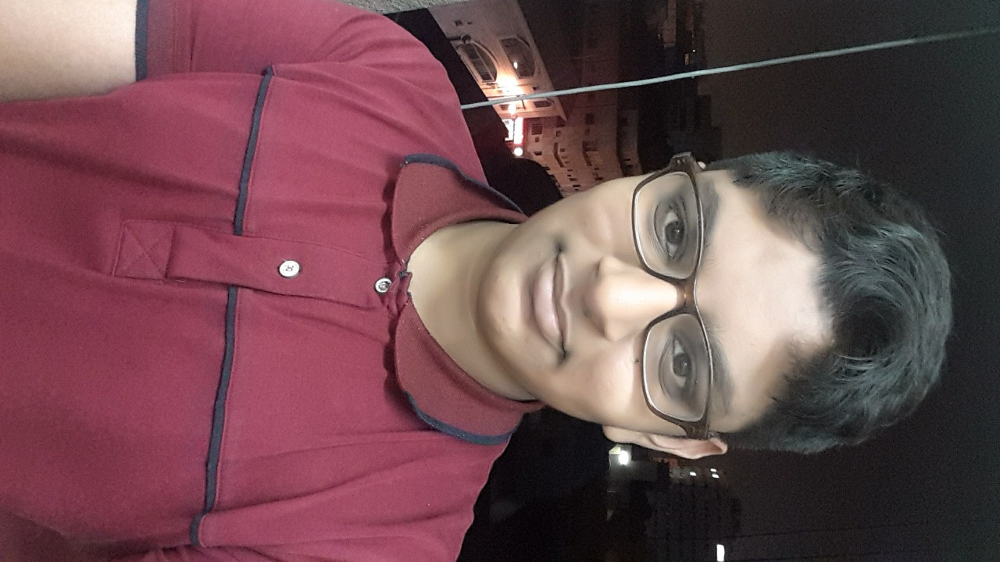
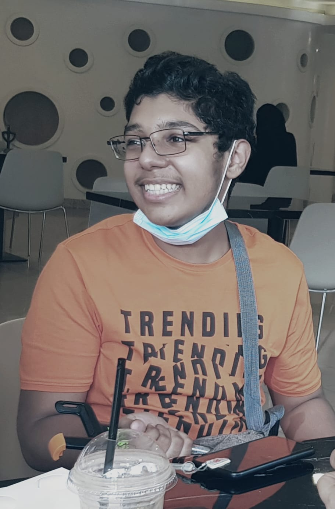
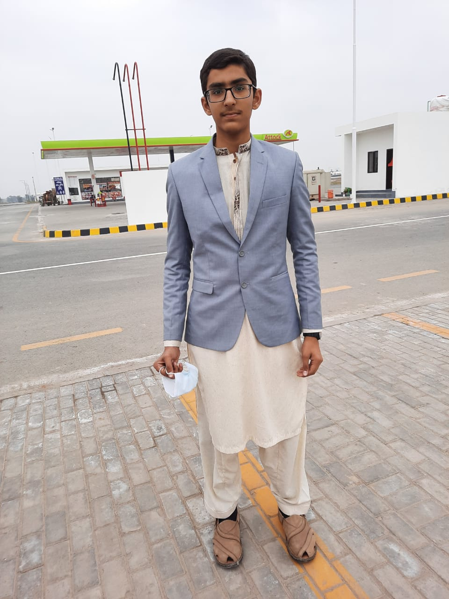

I have many friends. But the ones I am listing are those who helped me
make this website and responded when I needed them:
Sareb Janjua Sareb is one of my
newest best friends. We weren't very good friends in school, but we
became great friends through whatsapp. He is a programmer, and a web
developer. He always helps me with computer stuff whenever i crash
something. The best thing about Sareb is that his response time is
extremely fast. He almost always responds to my messages and i dont
have to wait for a very long time. An interesting fact is that i
havent met him in real life ever since we became great friends! 😂
CLICK HERE if you want to
know more about him.

Abdullah Rashid Abdullah
Rashid is one of my oldest friends when i was in section A. He is
basically very good at studying. At least he used to be. He left
Saudia in 2020, hence i can only keep in touch with him through
whatsapp. I love the way he adds emotion to his text while messaging.
Whenever someone is messaging in a group, i can easily identify(at
least i think i can) whether it is Abdullah Rashid or someone else.
The best thing about Abdullah is....he consolidates others and boosts
their confidence. Mad respect to Abdullah Bin Rashid.
CLICK HERE if you want
to know more about him.
Hussain Gohar Hussain Gohar is
became a friend of mine in 7th Grade. He is a very good and
hardworking person. If you ever meet Hussain in real life, i bet you
can become very good friends within minutes.
CLICK HERE if you want
to know more about him.

Abdul Munim He is my friend for
life. He is an extremely talented gamer, and a good bro. He is a great
artist. He can think of different structures and design concepts of
things and then turns them into reality.
CLICK HERE if you want to
know more about him.
Muheed Razaq He is my oldest best
friend. Probably my oldest friend. We became friends in grade 1. Ever
since then, we have always been great friends. He is a great artist
and photographer. Me and Muheed used to draw automobile structures
together.
CLICK HERE if you want to
know more about him.

Abdullah Zia Abdullah Zia is my
bibliophile(an individual who loves and frequently reads books)
friend. He is a very talented person. He is a Hafiz. He is a good
sportsman. He has a great voice. He remained the leader in Qiraat
competitions for years!